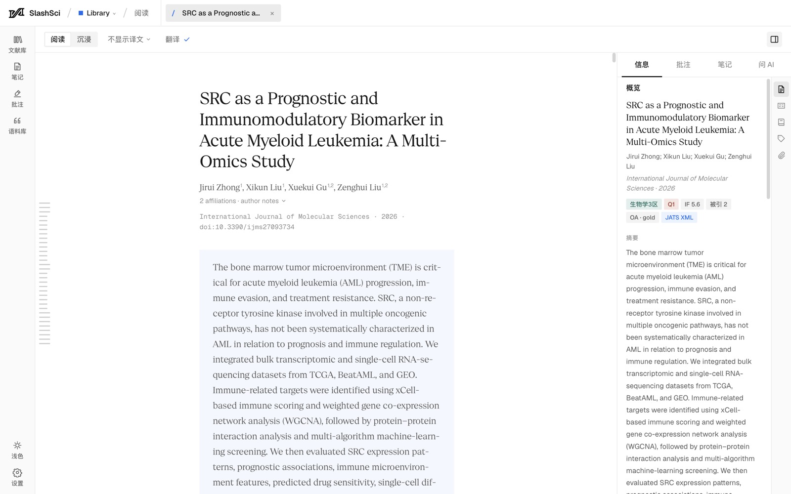

/ 斜槓科研
SlashSci
為 AI 時代設計的文獻管理與精讀工具。把論文讀成結構化的全文，批註、筆記、翻譯和 AI 問答都在同一處；你的文獻始終儲存在自己的電腦上。
支援 macOS（Apple 晶片）和 Windows。內測版尚未簽名，安裝說明見下方。


/ 文獻庫
讀得更深，管得更省心
結構化全文
優先取出版商的結構化全文，保留章節、公式、圖表和參考文獻，而不是一份難以複製的 PDF。圖片可一鍵換成出版商的高畫質版。
沉浸閱讀
原文與譯文對照，懸停即看關鍵詞和參考文獻。專為精讀設計的排版，長論文也流暢。
批註與筆記
劃詞高亮、框選圖片區域，筆記直接引用原文並可跳回出處。語料庫收集好句和詞彙。
翻譯與 AI
多種翻譯引擎和大模型可選，問 AI 時嚴格依據論文並標出處。金鑰儲存在你自己的電腦上。
一鍵收藏
輸入 DOI、arXiv 編號或網址即可匯入；瀏覽器外掛能收藏需要登入或訂閱才能看的頁面。
資料屬於你
文獻以 JSON、Markdown 和 XML 儲存在本機資料夾，可隨時整庫匯出備份，換電腦一鍵匯入。
/ 路線
一個產品，三種功能
文獻庫內測中
管理、精讀與批註文獻。
Agent規劃中
讓 AI 幫你完成檢索、整理和分析。
Bot規劃中
在日常工作的地方隨時呼叫。
/ 下載
下載與安裝
- Mac：開啟 .dmg，把 SlashSci 拖進「應用程式」。第一次開啟如提示「無法驗證開發者」，到「系統設定 → 隱私與安全性」點「仍要開啟」。
- Windows：雙擊 .exe。出現藍色的「Windows 已保護你的電腦」時，點「更多資訊」，再點「仍要執行」。
- 新版本釋出後，應用左側會出現「新版本」按鈕，點一下即可下載。